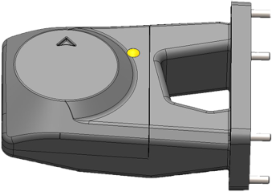

Les différentes interfaces
Les interfaces
Il existe 7 interfaces différentes permettant d'utiliser des modules comme présenté ci-après.
Représentation
Vue de dessus

Vue de côté

Interface A
- INTERFACE A - Plaque carbone (2mm) pleine
- INTERFACE A - Plaque carbone (2mm) avec deux INTERFACES B (inclus d'origine)
- INTERFACE A - Plaque carbone (2mm) avec ouverture pour TX2 et une INTERFACE B
Interface B
COVERS
- INTERFACE B - Plaque carbone 1,5mm (inclus d'origine)
GPS (PRINCIPAL - POSITION DROITE)
INTERFACE B - Module Here 3 (HEX) + support + visserie + strobe vert
| Description | |
|---|---|
 |
Module intégrant les fonctionnalités de récepteur radio, de transmetteur de données télémétriques. Ce module peut aussi transmettre à la station au sol un retour vidéo en HD. Possède 1 connecteur µ-HDMI, 1 interface USB, 1 JST pour liaison série, 1 JST pour la sortie des données radios |
| Fonctionnement | |
|---|---|
| Valim | 7-12V |
| Consommation inst. de courant (max) | 3A |
| Mécanique | |
| Dimensions | 76 x 76 x 16,6 mm |
| Poids | 48,8 grammes |
| Températures de fonctionnement | -40° à +85° C |
| GNSS | |
| Constellations captées | GPS L1C/A, GLONASS L1OF, BeiDou B1l |
| Processeur | STM32F302 |
| Précision | 3D FIX : 2,5 m / RTK : 0,025 m |
| Fréquence d'actualisation | Max : 8 Hz |
| Récepteur GPS | u-blox M8 module GNSS haute précision (M8P) |
| IMU | ICM20948 |
INTERFACE B - Module GNSS multi-bandes SGPSL12 + support (SHIELD Robotics)
| Description | |
|---|---|
|  | GNSS conçu en France. En navigation, capable de capter le signal de plus de trente satellites. Possibilité de suivre les signaux des constellations GPS, Galileo, Glonass, BeiDou, QZSS. Résistance accrue aux interférences électromagnétiques, augmentant la précision du GPS. |
| Mécanique | |
|---|---|
| Dimensions | 60 x 60 x 25 mm |
| Poids | 70 grammes |
| Températures de fonctionnement | -40° à +85° C |
| LED externe | Oui, 1 |
| GNSS | |
| Constellations captées | GPS/QZSS GLONASS BeiDou, Galileo |
| Bandes GNSS | L2 / L1 / E5b / B1 / B2 |
| Précision | bonne conditions : 50 cm | conditions agitées : < 200 cm |
| Fréquence d'actualisation | 20 Hz GNSS |
| Récepteur GPS | SGPSL12 |
| IMU | ICM20948 |
SUIVI DE TERRAIN
INTERFACE B - Module pour Lidar LW20/C (100m) - LIGHTWARE
| Description | |
|---|---|
.jpeg) |
Pour le suivi de terrrain, l'altimètre laser Lidar LW20/C transmet les premiers et derniers signaux pour permettre de distinguer le sommet de la végétation et le niveau du sol simultanément. En ajoutant un petit servo digital, le LW20/C peut être converti en un petit LiDAR capable d'enregistrer 388 points à la seconde lors du scan d'une zone. Idéal pour l'anti-collision et la navigation, le LW20/C peut autant communiquer les données en continu que permettre la prise de décision automatique basée sur des alarmes prédéfinies. |
| Spécification | |
|---|---|
| Fonctionnement | |
| Valim | 5V ± 0,5V DC |
| Ampérage | 130 mA |
| Puissance laser | < 2 mW |
| Sorties et interfaces | Série et I2C => 3.3V |
| Mécanique | |
| Dimensions | 19,5 x 30,2 x 35 mm |
| Poids | 20 g (sans câbles) |
| Températures de fonctionnement | -30 à +40°C |
| Lentille | Verre |
| Connectique | Câble à 5 branches et blindage |
| Protection | IP67 |
| LIDAR | |
| Portée | 0,2 - 100 m |
| Résolution | 1 cm |
| Lectures | 48 - 388 par secondes |
| Précision | ± 0,01 m |
| Optique | 28 x 15 mm |
| Divergence faisceau | 0,3° |
INTERFACE B - Module pour Lidar SF30/F (200m) - LIGHTWARE
| Description | |
|---|---|
.jpeg) |
L'altimètre LiDAR SF30/D dispose d'une portée de 200 mètres pour un poids de seulement 35 grammes. Conçu pour les drones de petites tailles et les véhicules autonomes, cet altimètre laser LiDAR sera idéal pour toutes les applications de type reconnaissance de terrain et évitement d'obstacles. |
| Spécification | |
|---|---|
| Fonctionnement | |
| Sorties et interfaces | Sorties et interfaces |
| Mécanique | |
| Dimensions | 30 x 56,5 x 50 mm |
| Poids | 35 g |
| Protection | Ouvert, pas d'IP |
| LIDAR | |
| Portée | 0,2 - 200 m |
| Intégration | API utilisateur, LightWare Studio |
| Sécurité | Emission laser sans danger pour els yeux, classe 1M |
TELEMETRIE
- INTERFACE B - Module de télémétrie RFD868x (RFDESIGN)
- INTERFACE B - Kit Télémétrie RFD900x (RFDESIGN)
IDENTIFICATION
- INTERFACE B - Module balise d'identification WIFI (DRONAVIA)
SECOURS
- Pack parachute GALAXY GRS 10-150
- Parachute GALAXY GRS (10-150) + fixation en aluminium 6061
- INTERFACE B - Module avec buzzer 110db + interrupteur mécanique
- Module de coupure moteurs PWM - Galaxy GRS
- Training pyro-actuator - GALAXY GRS
- Toile optionnelle plus performante et plus légère
Interface C
- INTERFACE C - Plaque carbone 1,5mm (inclus d'origine)
- INTERFACE C - Module avec connecteur XT30 femelle
- INTERFACE C - Module avec câbles 10AWG + XT90 (à souder)
- INTERFACE C - Modules pour antennes HERELINK (gauche et droite)
- INTERFACE C - Module avec USB FISCHER CONNECTORS (livré avec cordon USB)
Interface D
- INTERFACE D - Plaque carbone 1,5mm (inclus d'origine)
- INTERFACE D - Avec connecteurs JST + cache en PA12
- INTERFACE D - Avec connecteurs JST et passage nappe HDMI + cache en PA12
Interface E
- INTERFACE E - Support en carbone (1mm) pour module AIR HERELINK
Interface F
- INTERFACE F - Interfaces de fixation en PA12 pour fixation du TX2 sur la tranche
- INTERFACE F - Support en carbone (2mm) pour Carrier board standard CUBE 2.1